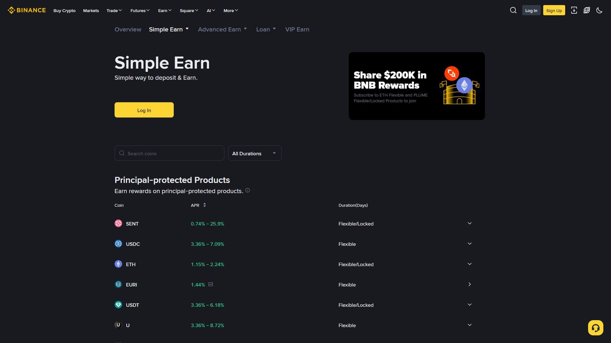

سٹیکنگ (Staking) = اپنی کرپٹو کو بلاک چین نیٹ ورک کی سیکیورٹی اور آپریشن کے لیے لاک (Lock) کرنا، اور اس کے بدلے میں انعام (Rewards) حاصل کرنا۔ یہ بینک کے "منی مارکیٹ اکاؤنٹ" کی طرح ہے، لیکن انعام کرپٹو میں ملتا ہے اور اس میں قیمت کا اتار چڑھاؤ اور لاک اپ کا رسک شامل ہوتا ہے۔

زیادہ تر جدید بلاک چینز Proof of Stake (PoS) پر چلتی ہیں۔ ان میں کوئی "مائننگ رِگ" نہیں ہوتا؛ بلکہ:
کوئی بھی صارف ٹوکن (مثلاً ETH, BNB, SOL, ADA) نیٹ ورک میں لاک کرتا ہے
↓
وہ نیٹ ورک کے فیصلوں (والدیشن) میں حصہ لیتا ہے
↓
ہر بلاک کے بدلے اُسے انعام (Rewards) ملتا ہے
↓
اگر وہ دھوکہ دہی کرے → اس کا لاک شدہ ٹوکن "ضبط" (Slashing) ہو جاتا ہےیعنی سٹیکنگ صرف "بونس" نہیں — یہ بلاک چین کے لیے کوئی بھی دھوکہ دہی مشکل بنانے کا طریقہ ہے۔ اگر آپ نے اب تک سنا ہے کہ "سٹیکنگ = پیسے کماؤ"، تو اس کی حقیقی وجہ یہی سیکیورٹی ماڈل ہے۔
| اصطلاح | مطلب |
|---|---|
| Proof of Stake (PoS) | بلاک چین کی ایسی مکینزم جس میں مالکانہ حقوق (Stake) سے اتفاق ہوتا ہے |
| Validator (ویلیڈیٹر) | نیٹ ورک چلانے والا نوڈ؛ خود لاک شدہ ٹوکن رکھتا ہے |
| Delegator (ڈیلیگیٹر) | وہ صارف جو اپنا ٹوکن ویلیڈیٹر کو "ڈیلیگیٹ" کرتا ہے (بائننس کی طرح) |
| Epoch | وقت کی ایک مدت جس کے بعد انعام کا حساب ہوتا ہے |
| APR / APY | سالانہ شرح — APY میں کمپاؤنڈنگ شامل ہے |
| Slashing | بدعنوانی/بند سرور پر لاک شدہ ٹوکن کا جزوی ضبط ہونا |
| خصوصیت | Locked Staking | Flexible (Flexible Savings) |
|---|---|---|
| شرح (Rewards) | زیادہ | کم |
| رقم نکلوانا | مقررہ مدت (7/30/60/90/120 دن) ختم ہونے تک نہیں | کسی بھی وقت فوری |
| لاک پیریڈ | ہاں | نہیں |
| موزوں | جو رقم کئی ماہ نہ چاہیے | جو رقم ہنگامی ضرورت کے لیے رکھنی ہو |
| ادائیگی | روزانہ/ہفتہ وار/مدت کے اختتام پر | روزانہ |
اصول: ہمیشہ پہلے Flexible سے شروع کریں۔ جب آپ کو یقین ہو کہ یہ رقم 30 دن تک نہیں چاہیے، تو Locked کا زیادہ APR لیں۔
APR = 10% (سادہ سالانہ)
اگر روزانہ کمپاؤنڈ ہو:
APY ≈ (1 + 0.10/365)^365 − 1 ≈ 10.51%آپ 1,000 USDT Flexible Savings میں رکھتے ہیں
APR = 5% (روزانہ ادائیگی، آپ ری-انویسٹ نہیں کرتے)
ایک سال بعد: 1,000 + 50 = 1,050 USDT انعام
اگر ری-انویسٹ کریں (APY ≈ 5.13%): ≈ 1,051.3 USDTنوٹ: یہ حساب کرپٹو کی قیمت شامل نہیں کرتا۔ اگر اس دوران USDT/BTC میں تبدیلی آئے یا ٹوکن کی قیمت گری، تو آپ کے اصل سرمائے پر منافع/نقصان الگ ہوگا۔ سٹیکنگ صرف "تعداد میں اضافے" (Yield) دیتا ہے، قیمت کا رسک ختم نہیں کرتی۔
1. Binance ایپ/ویب → Wallet → Earn
2. Simple Earn / Staking کا ٹیب کھولیں
3. کرپٹو منتخب کریں (USDT, BNB, ETH, SOL …)
4. Flexible یا Locked کا انتخاب کریں
5. رقم درج کریں (کم از کم رقم دیکھیں)
6. Rate/دورانیہ پڑھیں → Subscribe/Confirm
7. Manage میں جا کر اپنی Positions دیکھیں
8. Locked کی مدت ختم ہونے پر → Redeem / Auto-Renew آپشننکلوانے کے اصول:
| ٹوکن | نیٹ ورک | خصوصیت |
|---|---|---|
| BNB | BNB Smart Chain | بائننس کا اپنا ٹوکن، اکثر مختلف پروڈکٹس میں بہترین شرح |
| ETH | Ethereum | نیٹ ورک پر انحصار؛ Flexible اور Locked دونوں دستیاب |
| USDT/USDC | کئی نیٹ ورکس | "لون/لینڈنگ" کا حصہ — شرح مستحکم لیکن کم |
| SOL, ADA, DOT | اپنے نیٹ ورکس | Native staking عام طور پر Locked ہوتی ہے |
یاد رکھیں: زیادہ APR کا مطلب ہمیشہ زیادہ رسک ہے۔ 30%+ APR والے "سٹیکنگ" پروڈکٹس عموماً اصل سٹیکنگ نہیں بلکہ لون/لینڈنگ یا DeFi والٹ ہوتے ہیں۔
"سٹیکنگ = نیٹ ورک کی حفاظت میں حصہ، بدلے میں انعام — مفت پیسے نہیں۔"
اصول: Low APR + Flexible = سکون؛ High APR + Locked = رسک۔ جو رقم بندھ جانے کا متحمل نہ ہو، اُسے Flexible میں رکھیں۔